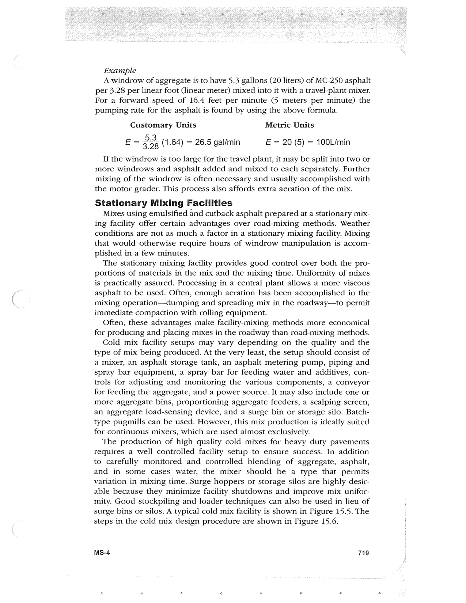

PDF page 753 · book page sequence 719


Searchable transcription
Unproofread OCR · 478 detected words; mean OCR confidence 95.25. Check technical values, symbols and table columns against the scan.
Example
A windrow of aggregate is to have 5.3 gallons (20 liters) of MC-250 asphalt per 3.28 per linear foot (linear meter) mixed into it with a travel-plant mixer. For a forward speed of 16.4 feet per minute (5 meters per minute) the pumping rate for the asphalt is found by using the above formula.
Customary Units Metric Units E = 23 (1.64) = 26.5 gal/min E = 20 (5) = 100L/min
If the windrow is too large for the travel plant, it may be split into two or more windrows and asphalt added and mixed to each separately. Further mixing of the windrow is often necessary and usually accomplished with the motor grader. This process also affords extra aeration of the mix.
Stationary Mixing Facilities
Mixes using emulsified and cutback asphalt prepared at a stationary mix- ing facility offer certain advantages over road-mixing methods. Weather conditions are not as much a factor in a stationary mixing facility. Mixing that would otherwise require hours of windrow manipulation is accom- plished in a few minutes.
The stationary mixing facility provides good control over both the pro- portions of materials in the mix and the mixing time. Uniformity of mixes is practically assured. Processing in a central plant allows a more viscous asphalt to be used. Often, enough aeration has been accomplished in the mixing operation—dumping and spreading mix in the roadway—to permit immediate compaction with rolling equipment.
Often, these advantages make facility-mixing methods more economical for producing and placing mixes in the roadway than road-mixing methods.
Cold mix facility setups may vary depending on the quality and the type of mix being produced. At the very least, the setup should consist of a mixer, an asphalt storage tank, an asphalt metering pump, piping and spray bar equipment, a spray bar for feeding water and additives, con- trols for adjusting and monitoring the various components, a conveyor for feeding the aggregate, and a power source. It may also include one or more aggregate bins, proportioning aggregate feeders, a scalping screen, an aggregate load-sensing device, and a surge bin or storage silo. Batch- type pugmills can be used. However, this mix production is ideally suited for continuous mixers, which are used almost exclusively.
The production of high quality cold mixes for heavy duty pavements requires a well controlled facility setup to ensure success. In addition to carefully monitored and controlled blending of aggregate, asphalt, and in some cases water, the mixer should be a type that permits variation in mixing time. Surge hoppers or storage silos are highly desir- able because they minimize facility shutdowns and improve mix unifor- mity. Good stockpiling and loader techniques can also be used in lieu of surge bins or silos. A typical cold mix facility is shown in Figure 15.5. The steps in the cold mix design procedure are shown in Figure 15.6.
MSs-4 719